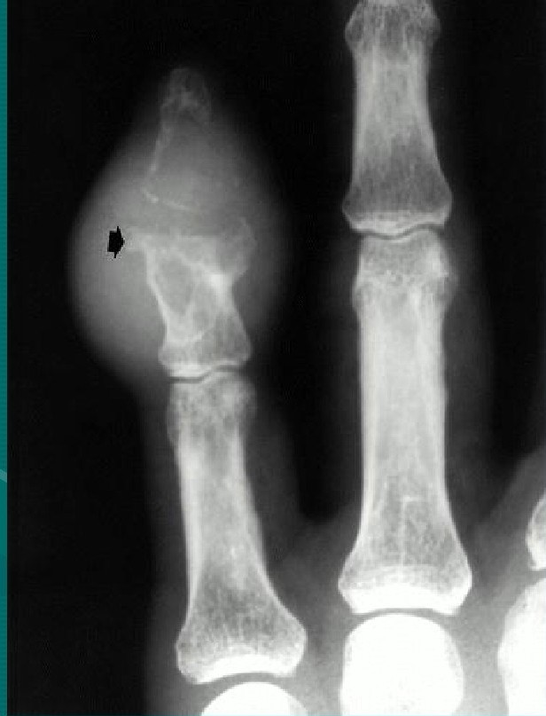

On March 5th, 2018, OpenAI opened its door for its first ever Hackathon. In 6 hours, I and other team members worked on a project to live detect purine rich seafoods for gout patients. OpenAI blogpost about this project:https://blog.openai.com/hackathon-follow-up.
Team member: Clarence Leung (Neflix) , Kyle Zheng (E-bay) , Madeline Hawkins (UCSC), Stergios Hetelekides (Tesla) and Jia le Xian (Lizora).
In the Hackathon, we retrained OpenCV to recognize 7 types of purine-rich seafood for gout patients (Figure 1). Consumption of these types of seafood will worse gout patients’ pain and increase possibilities of future gout attack: a sharp and intense pain in the joints. After training the model, we deployed it to a mobile device (Iphone X). We use pre-labeled dataset Food 101 for the training.
Figue 1
YesNocevicheclam_chowdergrilled_salmoncrab_cakes lobster_bisque lobster_roll_sandwich mussels oysters scallops tuna_tartare Notes: these are seafood labels included in the Food 101 dataset.
| Food 101 Dataset |
|---|
| clam_chowder |
| grilled_salmonclam_chowder | crab_cakes |
| lobster_bisque |
| lobster_roll_sandwich |
| mussels |
| oysters |
| scallops |
| tuna_tartare |
Update: After the Hackathon, I continue working on the project and hope to open source it in Jan. The dataset of seafood increased from 7 categories to a total of 12 categories covering all purine-rich seafood. The total dataset increased from 3000 images to about 20,000 images of purine-rich seafood. Dataset will be published on Github soon.
Background: Gout is a common form of arthritis that usually affects one joint at a time and is very painful. (Figure 2) In the U.S., in 2007 to 2008, the condition affects 8.3 million people, or 3.9% of the population.
A 12-year study did by Harvard University team have showed the direct correlation between purine-rich seafood and increased possibility of gout attack. Usually, patients are told to avoid seafood in doctor office visits, however, seafood is a broad category.
There are 89 types of seafood in the market.In fact, only selected type of seafood need to be avoided, according to Mayo Clinic and U.S. Centers For Disease Control and Prevention (USCDC). These types of seafood are higher in purines than other types: anchovies, herring, sardines, mussels, scallops, trout, haddock, mackerel and tuna.
In addition, for people who live in coastal cities and countries that rely on seafood as their primary source of animal protein, it is almost impossible to avoid all types of seafood. Memorizing all types of seafood to avoid is a daily struggle for gout patients and their family. Our goal is to make this process easier.